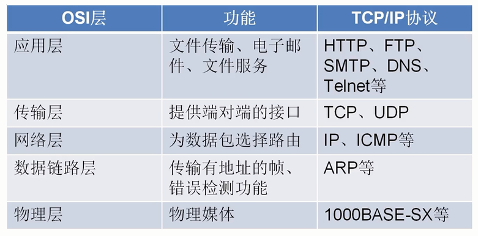
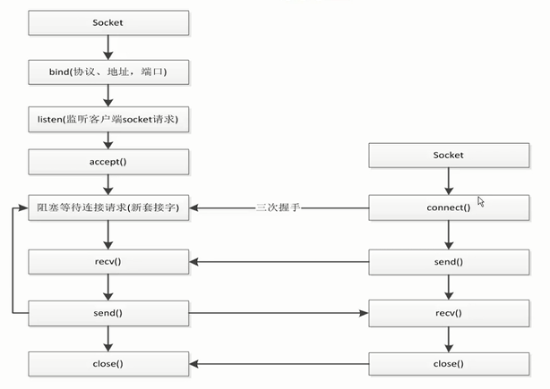

五层网络模型

操作系统给我们提供了一个socket接口, 用于实现TCP和UDP, 它不属于任何协议！
socket编程

django的socket是存在于uwsgi中！
使用多线程实现多用户连接
""" client端 """
import socket
client = socket.socket(socket.AF_INET,socket.SOCK_STREAM)
client.connect(('127.0.0.1', 8001))
while True:
re_data = input()
client.send(re_data.encode("utf8"))
data = client.recv(1024)
print(data.decode("utf8"))
# client.send("whw".encode("utf8"))
# data = client.recv(1024)
# print (data.decode("utf8"))
# client.close()
""" server端 """
import socket
import threading
server = socket.socket(socket.AF_INET,socket.SOCK_STREAM)
# 在绑定前调用setsockopt让套接字允许地址重复利用
server.setsockopt(socket.SOL_SOCKET, socket.SO_REUSEADDR, 1)
server.bind(('0.0.0.0', 8001))
server.listen()
def handle_sock(sock, addr):
while True:
data = sock.recv(1024)
print(data.decode("utf8"))
re_data = input()
sock.send(re_data.encode("utf8"))
#获取从客户端发送的数据
#一次获取1k的数据
while True:
sock, addr = server.accept()
# 用线程去处理新接收的连接(用户)
client_thread = threading.Thread(target=handle_sock, args=(sock, addr))
client_thread.start()
# data = sock.recv(1024)
# print(data.decode("utf8"))
# re_data = input()
# sock.send(re_data.encode("utf8"))
# server.close()
# sock.close()
socket模拟http请求
- 对url解析得到host和path(调用urllib)
- 使用socket进行连接
- 发送get请求, 然后接受数据
- 对数据进行解析处理
- 最后断开socket连接
# requests -> urlib -> socket
import socket
from urllib.parse import urlparse
def get_url(url):
# 通过socket请求html
url = urlparse(url)
host = url.netloc
path = url.path
if path == "":
path = "/"
# 建立socket连接
client = socket.socket(socket.AF_INET, socket.SOCK_STREAM)
# client.setblocking(False)
client.connect((host, 80)) #阻塞不会消耗cpu
# 不停的询问连接是否建立好， 需要while循环不停的去检查状态
# 做计算任务或者再次发起其他的连接请求
client.send("GET {} HTTP/1.1\r\nHost:{}\r\nConnection:close\r\n\r\n".format(path, host).encode("utf8"))
data = b""
while True:
d = client.recv(1024)
if d:
data += d
else:
break
data = data.decode("utf8")
html_data = data.split("\r\n\r\n")[1]
print(html_data)
client.close()
if __name__ == "__main__":
import time
start_time = time.time()
for url in range(20):
url = "http://shop.projectsedu.com/goods/{}/".format(url)
get_url(url)
print(time.time()-start_time)
全局解释器锁——GIL
GIL的全称是Global Interpreter Lock
- python中一个线程对应于c语言中的一个线程
- GIL使得同一个时刻只有一个线程在一个cpu上执行字节码, 无法将多个线程映射到多个cpu上执行
- GIL会根据执行的字节码行数以及时间片释放gil, gil在遇到io的操作时候主动释放
GIL的特点
-
Python在多线程下，每个线程的执行方式为：
-
获取GIL
- 执行代码直到sleep或者是python虚拟机将其挂起
- 释放GIL
一个CPU只能执行一个线程, 例如一个CPU 有三个线程, 首先线程A执行, 然后线程A达到释放条件进行释放GIL, 线程B和线程C进行竞争GIL, 谁抢到GIL, 继续执行。
GIL无法保证线程绝对安全
total = 0
def add():
global total
for i in range(1000000):
total += 1
def desc():
global total
for i in range(1000000):
total -= 1
import threading
thread1 = threading.Thread(target=add)
thread2 = threading.Thread(target=desc)
thread1.start()
thread2.start()
thread1.join()
thread2.join()
print(total)
"""
每次的结果都不一样
"""